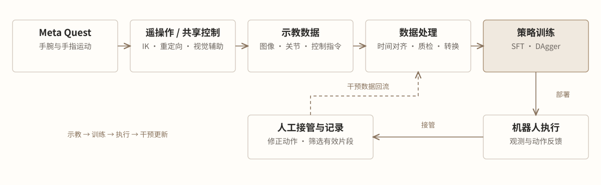
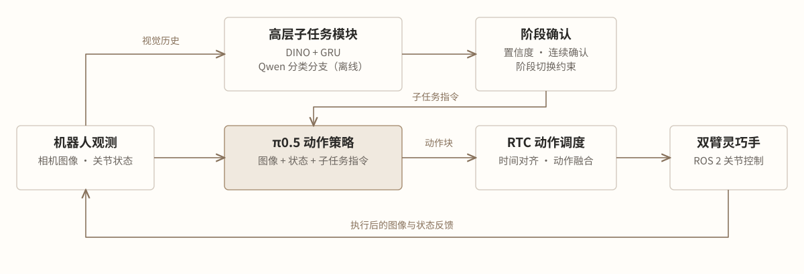

Teleoperation · Robot Learning
双臂灵巧手操作
遥操作、策略学习与实机实验
面向双臂灵巧手的多步骤与精细操作，构建遥操作示教、数据处理、VLA 适配与后训练、分层任务执行流程。实践涵盖桌面整理、物品打包和插座插接，结合 SFT、DAgger 与 RL 后训练（RL Token） 开展策略学习，并通过 RTC 衔接模型推理和机器人控制。
演示
方法与实践
遥操作、共享控制与数据构建
基于 Meta Quest 获取手腕位姿与手指运动，通过 mink 逆运动学、增量式机械臂控制和手部重定向实现协同示教；结合视觉规划的目标操作姿态，辅助末端接近和抓取。
协助搭建数采平台、采集与处理操作数据，开发自动化质检、时间对齐和格式转换流程。对多相机图像、关节反馈、控制指令与子任务标注进行同步，剔除缺帧、非法关节值和时间间断，生成 LeRobot 格式的训练数据，并统一训练与部署中的关节顺序、动作表示和归一化配置。

VLA 适配与策略后训练
复现和实践 Diffusion Policy、ACT、π0.5 与 GR00T，完成双臂灵巧手的观测与动作接口适配。以 π0.5 为例，策略接收图像、机器人状态和语言指令，经监督微调（SFT）学习示教操作，输出未来动作片段。
针对 SFT 策略在实机任务中表现不足的情况，引入人工介入与 DAgger 训练，并结合 RL 后训练，提升任务成功率与泛化能力。
高层子任务识别与 RTC 执行
高层模块利用视觉历史识别任务阶段，并将子任务标签映射为语言指令。DINO + GRU 分支建模历史观测并预测短期子任务标签；Qwen 分支采用多帧输入与分类头开展子任务识别实验。阶段输出通过置信度筛选、连续确认和转移约束稳定切换，动作策略在下一次推理时读取更新后的指令。
RTC 将策略推理与机器人执行异步运行。新动作块到达后，依据观测时间去除过期动作，与尚未执行的片段对齐和融合，再通过 ROS 2 插值发布关节目标。运行端管理动作缓存及暂停、恢复和人工控制切换，恢复时清除旧预测并根据最新观测重新推理。
